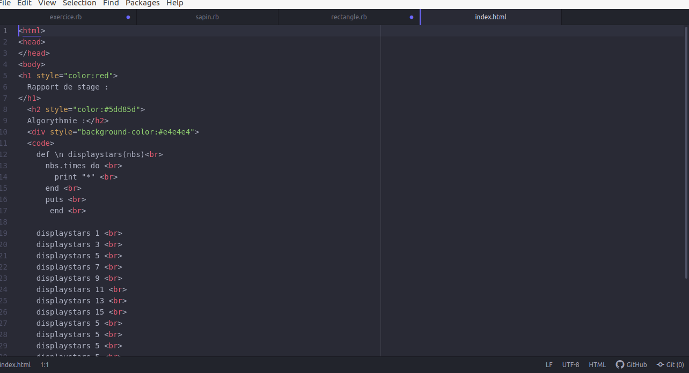

Rapport de stage :
Installation de Linux :
- téléchargement d'Ubuntu sur Internet
- téléchargement de Rufus sur Internet
- installation d'Ubuntu sur clé USB grâce à Rufus
- Formatage du PC de Windows à Linux avec Ubuntu
Algorythmie :
Utulisation du Terminal pour créer des fichiers et des dossiers mais aussi pour exercuter les codes sur Atom :
def \n displaystars(nbs)
nbs.times do
print "*"
end
puts
end
displaystars 1
displaystars 3
displaystars 5
displaystars 7
displaystars 9
displaystars 11
displaystars 13
displaystars 15
displaystars 5
displaystars 5
displaystars 5
displaystars 5
Création d'une page html :

cliquez pour accéder à Google